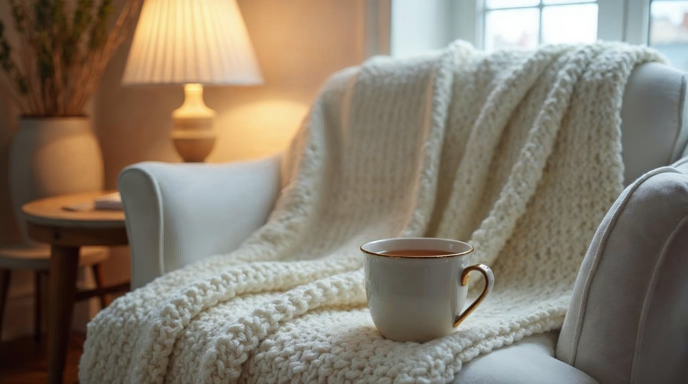

이종호 한의사 감수좋은꿈참사랑한의원 대표원장 (한의사 면허번호 19769)발행 2026-11-23 · 수정 2026-11-26
이 글의 차례
- 왜 이런 불편이 생길 수 있나요
- 다른 원인도 함께 살펴볼 차이는 무엇인가요?
- 먼저 이렇게 여쭙니다
- 일상에서 먼저 해 볼 수 있는 것
- 목욕은 어떻게 도와 드리면 좋을까요?
- 밤잠을 지키는 데 도움이 되는 것은 무엇일까요?
- 상황별 예시
- 스스로 점검해 보세요
- 한의학에서는 어르신 가려움을 어떻게 바라보나요?
- 자주 하는 오해는 무엇인가요?
- 보호자께서 함께 챙겨 드릴 점은 무엇일까요?
- 혼자 사시는 부모님이라면 어떻게 챙길까요?
- 한의원에서 함께 살필 수 있는 경우
- 첫 진료는 어떤 순서로 진행되나요?
- 다시 오셨을 때는 무엇을 비교하나요?
- 얼마나 지켜보고 언제 상담할까요
- 이렇게 기록해 오시면 상담이 쉬워집니다
- 이런 증상은 먼저 확인이 필요합니다
- 함께 읽으면 좋은 글
부모님이 밤마다 온몸이 가렵다고 하실 때는 나이가 들며 얇고 건조해진 피부가 가장 흔한 이유지만, 드시는 약이나 몸 안의 다른 변화와 관련된 경우도 있어 씻는 습관과 보습, 약 목록, 잠을 함께 확인합니다.
상도동과 노량진에는 오래 사신 어르신이 많아, 겨울이면 등과 다리를 긁느라 잠을 못 주무신다는 이야기를 자녀분께 자주 듣습니다.
왜 이런 불편이 생길 수 있나요
- 나이가 들면 피부의 기름과 수분을 지키는 힘이 줄어 겨울철에 쉽게 건조해집니다.
- 뜨거운 물 목욕, 때 밀기, 두꺼운 이불의 열기가 밤 가려움을 키울 수 있습니다.
- 나이가 들면 잠이 얕아지고 밤에 깨는 일이 잦아져, 깬 사이 가려움을 더 크게 느끼기도 합니다.
- 입맛이 줄고 물을 적게 드시면 몸 전체가 건조한 쪽으로 기울기 쉬워, 한의학에서는 이를 피부와 함께 살핍니다.
- 여러 가지 약을 드시는 경우 약에 따라 가려움이 생기기도 합니다.
- 간, 콩팥, 갑상선 같은 몸 안의 변화가 가려움으로 나타나는 경우도 있어 확인 신호를 함께 봅니다.
어르신 피부는 젊을 때보다 얇아지고, 피부 겉의 기름막을 만드는 힘도 줄어듭니다. 그래서 같은 난방, 같은 목욕을 해도 수분이 더 빨리 빠져나가고, 작은 자극에도 가려움을 느끼기 쉽습니다.
여기에 오래 써 오신 목욕 습관이 겹칩니다. 뜨거운 탕에 오래 계시고 때를 시원하게 미는 것이 몸에 밴 분이 많은데, 겨울에는 그 습관이 피부를 더 마르게 할 수 있습니다.
다른 원인도 함께 살펴볼 차이는 무엇인가요?
어르신 가려움은 건조함이 가장 흔하지만, 아래처럼 다른 모습이 함께 보이면 피부과나 내과 확인을 함께 받아 보시는 것이 좋습니다.
- 함께 사는 가족이나 요양 시설의 다른 분도 가려워하고, 손가락 사이와 손목, 허리띠 자리에 작은 알갱이가 보이는 경우
- 가려움이 몇 주 이어진 뒤 팔다리에 크고 단단한 물집이 생기는 경우
- 새로 받은 약을 드시기 시작한 무렵부터 가려움이 시작된 경우
- 피부에는 거의 변화가 없는데 몸 여러 곳이 계속 가렵고 피로가 늘어난 경우
이런 모습 없이 하얀 각질과 잔금, 긁은 자국이 주로 보인다면 아래처럼 목욕과 보습, 침실 환경부터 함께 바꿔 봅니다.
먼저 이렇게 여쭙니다
- 목욕은 얼마나 자주, 어떤 물 온도로 하시나요?
- 드시는 약이 몇 가지인지, 최근 바뀐 약이 있나요?
- 가려움 때문에 밤에 몇 번 정도 깨시나요?
- 피부에 긁은 자국 말고 다른 발진이 보이나요?
- 가려운 곳이 등처럼 손이 닿지 않는 곳인가요?
- 하루에 물이나 국물을 얼마나 드시나요?
- 입맛과 식사량이 예전과 비교해 어떠신가요?

일상에서 먼저 해 볼 수 있는 것
- 목욕은 미지근한 물로 짧게, 비누는 최소한으로
- 목욕 뒤 등까지 보습제를 발라 드리기
- 손톱을 짧게 다듬어 긁어도 상처가 덜 나게 하기
- 침실 습도를 맞추고 두꺼운 이불 대신 가벼운 이불 덮기
- 실내 온도를 너무 높이지 않고 내복은 면 소재로 입으시게 하기
- 세탁 세제는 향이 적은 것으로 쓰고 헹굼을 한 번 더 하기
- 물은 한 번에 많이보다 조금씩 나눠 자주 드시게 하기(물 양을 제한하라는 안내를 받으신 분은 그 안내를 따르기)
- 낮에 햇볕 드는 시간에 가볍게 걸으시며 밤잠의 리듬 지키기
목욕은 어떻게 도와 드리면 좋을까요?
목욕은 매일보다 이틀에 한 번 정도로 하시고, 매일 씻고 싶어 하시면 짧은 샤워로 바꿔 드리는 방법이 있습니다. 물 온도는 보호자 손목 안쪽에 대 보아 따뜻한 정도면 충분합니다.
비누는 겨드랑이와 사타구니, 발처럼 땀이 차는 곳에만 쓰고, 팔다리와 등은 물로만 헹궈도 괜찮은 경우가 많습니다. 때수건 대신 부드러운 손이나 수건으로 쓸어 드리세요.
목욕 뒤에는 미끄러지지 않게 의자에 앉으시게 하고, 물기를 눌러 닦은 다음 3분 안에 등과 정강이부터 보습제를 발라 드립니다.
밤잠을 지키는 데 도움이 되는 것은 무엇일까요?
어르신은 밤에 한두 번 깨시는 경우가 많은데, 깬 사이 가려움이 느껴지면 다시 잠들기 어려워집니다. 그래서 밤 가려움은 피부와 잠을 함께 돌보는 쪽으로 접근합니다.
- 낮잠은 오후 이른 시간에 30분 안쪽으로 줄이기
- 저녁에는 커피와 진한 차를 줄이고, 잠들기 전 따뜻한 물 한 모금 정도로 마무리하기
- 머리맡에 보습제와 찬 수건을 두어 깨셨을 때 긁기 전에 쓰시게 하기
- 밤에 화장실 가시는 길에 작은 등을 켜 두어 넘어지지 않게 하기
상황별 예시
- 예를 들어 혼자 사시며 겨울에 보일러를 높이 틀고 두꺼운 이불을 덮고 주무시는 경우, 자녀분이 침실 온도와 습도를 한 번 확인해 드리고, 등처럼 손이 닿지 않는 곳에 보습제를 바르기 쉬운 도구를 마련해 드리는 것부터 시작할 수 있습니다.
- 예를 들어 다니시는 병원에서 약이 바뀐 뒤부터 가려움이 늘었다고 하시는 경우, 약 봉투를 모두 챙겨 오시면 약이 바뀐 시기와 가려움이 시작된 시기를 함께 맞춰 보고, 약 조정은 처방한 의사와 상의하시도록 안내합니다.
- 예를 들어 입맛이 줄어 하루 한두 끼만 드시고 물도 잘 안 드시는 경우, 피부 건조와 함께 식사와 물, 대변 상태를 이어서 살핍니다.
- 예를 들어 요양 시설이나 데이케어센터에 다니시는 경우라면, 그곳의 목욕 횟수와 쓰는 비누를 여쭤 보고, 다른 분들도 가려워하시는지 함께 알아봐 주시면 살피는 데 도움이 됩니다.
스스로 점검해 보세요
- 목욕을 뜨거운 물로 오래 하시거나 때를 세게 미시나요?
- 가려움 때문에 밤에 두 번 넘게 깨시나요?
- 최근 석 달 안에 새로 받거나 바뀐 약이 있나요?
- 하루 물 드시는 양이 서너 잔이 안 되나요?
- 긁은 자국 말고 붉은 발진, 물집, 진물이 보이나요?
- 피부나 눈 흰자가 예전보다 노랗게 보이나요?
- 식사량이 줄고 체중이 빠지셨나요?
앞의 네 항목에 해당하는 것을 적어 오시면 목욕 습관과 잠, 약, 물 가운데 어디부터 살필지 함께 정하기 쉽습니다.
한의학에서는 어르신 가려움을 어떻게 바라보나요?
한의학에서는 나이가 들며 몸을 적시는 진액과 피가 차츰 줄어드는 것을 자연스러운 흐름으로 보고, 그 결과 피부가 마르고 가려워지는 모습을 함께 살핍니다. 입이 마르고 변이 단단해지며, 밤에 손발이 화끈거리는 모습이 함께 나타나기도 합니다.
그래서 어르신 가려움은 피부에 바르는 것만이 아니라 식사와 물, 잠, 대변의 리듬까지 함께 돌보는 쪽으로 접근합니다. 진료실에서는 이런 신호를 차례로 여쭙고, 보호자께서 집에서 챙기기 쉬운 것부터 함께 정리해 드립니다.
자주 하는 오해는 무엇인가요?
- 나이 들면 원래 가려운 것이라 어쩔 수 없다는 생각: 목욕과 보습, 침실 환경을 바꿔 보며 밤에 깨는 횟수가 달라지는지 살펴볼 수 있고, 다른 원인이 함께 있는 경우도 있어 그냥 넘기지 않으셔도 됩니다.
- 가려움 연고는 많이 바를수록 좋다는 생각: 처방받은 연고는 안내받은 양과 기간을 지키고, 보습제는 넉넉히 자주 바르는 것으로 나눠 생각해 주세요.
보호자께서 함께 챙겨 드릴 점은 무엇일까요?
어르신은 가렵다는 말을 자주 하지 않으시거나, 긁은 상처를 대수롭지 않게 여기시는 경우가 많습니다. 보호자께서 가끔 등과 다리를 살펴봐 주시면 큰 도움이 됩니다.
- 일주일에 한 번 등과 정강이, 허리띠 자리에 긁은 상처나 새 발진이 있는지 보기
- 약 봉투가 바뀌면 날짜를 적어 두기
- 식사량과 물 드시는 양이 줄었는지 살피기
- 밤에 몇 번 깨셨는지 아침에 가볍게 여쭤 보기
혼자 사시는 부모님이라면 어떻게 챙길까요?
혼자 사시는 부모님은 등에 보습제를 바르기 어렵고, 밤에 가려워 깨셔도 말씀하지 않으시는 경우가 많습니다. 자주 찾아뵙기 어렵다면 전화로 몇 가지를 가볍게 여쭤 보세요.
- 어젯밤 몇 번 깨셨는지, 가려워서 깨셨는지
- 목욕은 언제 하셨고 물은 뜨겁지 않았는지
- 보일러 온도는 몇 도로 두셨는지
- 식사는 몇 끼 드셨고 물은 얼마나 드셨는지
찾아뵐 때는 손잡이가 긴 보습 도구와 습도계를 마련해 드리고, 약 봉투를 한 번 사진으로 찍어 두시면 진료 때 큰 도움이 됩니다.
한의원에서 함께 살필 수 있는 경우
- 가려움 때문에 잠을 깊이 못 주무시는 경우 피부와 잠을 함께 살핍니다.
- 몸이 마르고 건조한 편인지 체질과 식사, 물 드시는 양을 함께 살핍니다.
- 드시는 약이 많은 경우 목록을 함께 보며 생활을 살피고, 약 조정은 처방한 의사와 상의하도록 안내합니다.
- 피부과·내과 확인 뒤 큰 이상은 없다고 들었지만 밤잠과 가려움이 이어지는 경우입니다.
좋은꿈참사랑한의원에서는 보호자와 어르신의 이야기를 함께 듣고 천천히 설명합니다. 피부만이 아니라 잠·식사·물·대변·손발의 온기 같은 몸 전체의 리듬을 함께 보고, 침이나 한약 상담 등 상태에 맞는 방법을 정합니다.
드시는 약이 많은 어르신일수록 한약은 약 목록을 먼저 모두 확인한 뒤에 상담합니다. 드시던 약은 임의로 줄이거나 끊지 않으시도록 함께 챙겨 주세요.
첫 진료는 어떤 순서로 진행되나요?
- 모든 분의 맥을 먼저 짚고, 어르신과 보호자의 이야기를 함께 들으며 가려움이 시작된 시기와 심한 때, 목욕 습관을 정리합니다.
- 등, 정강이, 팔, 허리띠 자리처럼 가려운 곳의 피부를 천천히 살펴봅니다.
- 가져오신 약 봉투와 약 목록을 함께 보며 최근 바뀐 약이 있는지 확인합니다.
- 필요하다고 판단되면 혀의 모습도 살피고, 잠과 식사량, 물, 대변, 손발의 온기를 여쭙습니다.
- 귀가 전에는 보호자께서 집에서 챙길 일과 다음에 이어서 확인할 일을 말씀드립니다.
어르신께서 진료실에서 긴장하셔서 평소 이야기를 다 하지 못하시는 경우가 많습니다. 천천히 여쭙고, 보호자께서 보신 모습도 함께 들으며 정리합니다.
다시 오셨을 때는 무엇을 비교하나요?
두 번째 진료부터는 다시 맥을 짚고, 긁은 상처와 새 발진이 있는지 함께 봅니다. 그사이 새로 받은 약이 있다면 날짜와 함께 다시 확인합니다.
얼마나 지켜보고 언제 상담할까요
- 목욕 습관과 보습, 침실 온도·습도를 바꾼 뒤 2주 정도는 밤에 깨신 횟수를 적으며 지켜볼 수 있습니다.
- 2주가 지나도 잠을 깊이 못 주무시거나 가려운 곳이 넓어지면 상담을 받아 보시기를 권합니다.
- 뚜렷한 발진 없이 가려움만 6주 넘게 이어진다면 내과 확인도 함께 받아 보시기를 권합니다.
이렇게 기록해 오시면 상담이 쉬워집니다
- 드시는 약 전체 목록(약 봉투 사진도 괜찮습니다)과 최근 바뀐 약, 바뀐 날짜
- 목욕 횟수와 물 온도, 쓰는 비누와 보습제
- 밤에 가려움으로 깬 횟수
- 식사량과 물 드시는 양, 대변 상태
- 가려움이 심해지기 시작한 무렵 바뀐 생활(난방 기구, 새 내복, 세제 등)
- 가렵거나 긁은 자리의 사진
밤마다 가려워 깨시는 부모님을 지켜보는 마음도 편치 않으셨을 것 같습니다. 다음에 오시면 보호자분이 보신 어르신의 밤 모습부터 여쭙겠습니다.
이런 증상은 먼저 확인이 필요합니다
- 피부나 눈 흰자가 노랗게 보이거나 체중이 이유 없이 줄어드는 경우
- 가려운 곳에 띠 모양 물집이 생기며 아프거나, 붉은 발진이 번지며 열이 나는 경우
이런 신호가 있으면 한의원보다 가까운 병원이나 응급실을 먼저 찾으세요.
함께 읽으면 좋은 글
- 밤마다 정강이가 가려워 긁게 될 때는 어떻게 살피나요?
- 한의원 가기 전에 복용 약 목록은 어떻게 정리하면 좋나요?
- 부모님 진료에 함께 갈 때는 무엇을 기록해 가면 좋을까요?

여쭙는 것
- 목욕은 얼마나 자주, 어떤 물 온도로 하시나요?
- 드시는 약이 몇 가지인지, 최근 바뀐 약이 있나요?
- 가려움 때문에 밤에 몇 번 정도 깨시나요?
생활에서 해 볼 것
- 목욕은 미지근한 물로 짧게, 비누는 최소한으로
- 목욕 뒤 등까지 보습제를 발라 드리기
- 손톱을 짧게 다듬어 긁어도 상처가 덜 나게 하기
한의원에서 함께 살필 것
- 가려움 때문에 잠을 깊이 못 주무시는 경우 피부와 잠을 함께 살핍니다.
- 몸이 마르고 건조한 편인지 체질과 식사, 물 드시는 양을 함께 살핍니다.
- 드시는 약이 많은 경우 목록을 함께 보며 생활을 살피고, 약 조정은 처방한 의사와…
먼저 확인이 필요한 신호
- 피부나 눈 흰자가 노랗게 보이거나 체중이 이유 없이 줄어드는 경우
- 가려운 곳에 띠 모양 물집이 생기며 아프거나, 붉은 발진이 번지며 열이 나는 경우
한눈에 보는 표
| 구분 | 핵심 |
|---|---|
| 여쭙는 것 | 목욕은 얼마나 자주, 어떤 물 온도로 하시나요? 드시는 약이 몇 가지인지, 최근 바뀐 약이 있나요? |
| 생활에서 해 볼 것 | 목욕은 미지근한 물로 짧게, 비누는 최소한으로 목욕 뒤 등까지 보습제를 발라 드리기 |
| 한의원에서 함께 살필 것 | 가려움 때문에 잠을 깊이 못 주무시는 경우 피부와 잠을 함께 살핍니다. 몸이 마르고 건조한 편인지 체질과 식사, 물 드시는 양을 함께 살핍니다. |
| 먼저 확인이 필요한 신호 | 피부나 눈 흰자가 노랗게 보이거나 체중이 이유 없이 줄어드는 경우 가려운 곳에 띠 모양 물집이 생기며 아프거나, 붉은 발진이 번지며 열이 나는 경우 |
자주 묻는 질문
어르신 보습제는 따로 있나요?
향과 자극이 적고 바르기 쉬운 제품이면 충분합니다. 자주 바르는 것이 중요합니다.
함께 가도 되나요?
보호자분이 함께 오셔서 평소 모습을 말씀해 주시면 큰 도움이 됩니다.
드시는 약 때문일 수도 있나요?
일부 약은 가려움을 일으킬 수 있어 목록을 함께 봅니다. 다만 약은 처방한 의사와 상의 없이 바꾸거나 끊지 마세요.
가려움 때문에 잠을 못 주무시면 어떻게 하나요?
잠들기 전 보습과 시원한 침실이 먼저이며, 잠과 가려움을 함께 살핍니다. 잠을 돕는 약은 처방한 의사와 상의하세요.
긁지 못하게 말려야 하나요?
억지로 말리기보다 손톱을 짧게 다듬고, 가려울 때 찬 수건을 대 드리거나 보습제를 덧발라 드리는 쪽으로 손이 가게 도와 드리세요. 긁은 상처가 덧나지 않는지도 살펴봐 주세요.
좋은꿈참사랑한의원은 재진 때 지난번 이야기부터 이어서 여쭙니다. 진료시간과 예약은 오시는 길에서 확인하세요.
어디서 상담받을 수 있나요?
좋은꿈참사랑한의원은 서울 동작구 만양로2길 2 신성빌딩 3층·5층(서울 동작구 상도동, 7호선 상도역 3번 출구 근처)에 있습니다. 한의사 3명(이종호 대표원장, 조영기 수석진료원장, 정원영 진료원장)이 진료합니다. 진료시간은 평일 09:30~20:00(점심 13:00~14:00), 토·일·공휴일 09:30~15:00이며, 방문 전 전화로 확인을 권합니다. 예약은 네이버 예약, 카카오톡 상담, 전화 02-815-7510로 받습니다.
이 글은 일반적인 건강 정보이며 개인의 진단이나 치료를 대신하지 않습니다. 증상이 있거나 복용 중인 약이 있다면 진료를 통해 확인하세요. 치료 효과는 개인마다 다를 수 있습니다.
작성 기준: 일반적으로 알려져 있는 건강 정보를 참고해 정리했습니다(대표원장 감수). 증상 기록은 1~2주 동안 하루 1회, 비슷한 시간에 적어 오시면 지난 상태와 비교하기 쉽습니다.